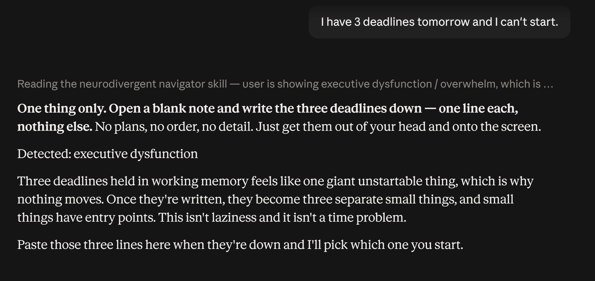

You get a wall of text and three questions back.
Ten options when you needed one. No sense that you were already overwhelmed before you started typing.
AI that leads with the answer.
A Claude skill for ADHD and dyslexic minds. That's not a you problem. It's a tool problem.
One time. Instant download. Installs in under 10 minutes.
Great question! Managing multiple competing deadlines can certainly feel overwhelming, and it's completely understandable that you're experiencing difficulty initiating your work right now.
Let me walk you through a comprehensive framework for prioritisation. First, it's important to understand the underlying causes of task paralysis, which research suggests may stem from a combination of factors including perfectionism, fear of failure, and cognitive load.
Here are ten strategies you might consider: 1) The Eisenhower Matrix, 2) Time blocking, 3) The Pomodoro Technique, 4) Eating the frog, 5) Chunking, 6) Body doubling, 7) Accountability partners, 8) Environment design, 9) Reward scheduling, 10) Habit stacking.
So the one due soonest is probably where to start, though it depends on your situation.
Would you like me to elaborate on any of these? Should I help you prioritise? Do you want me to build a schedule?
Then three questions, none of which you can answer while you're stuck.
Then one question, and only when it's actually needed.

- ·Preamble firstRestates your question back at you before it starts.
- ·Three questions backAsked while you are already struggling to begin.
- ·Ten optionsA menu, when what you needed was one next action.
- ·One flat voiceThe same register whether you're in flow or in a shame spiral.
- ·No memory of the sessionYou re-explain your context every time you come back.
Of course, the right approach really depends on your individual circumstances, your working style, and what you have found effective in the past.
It may also be worth considering whether the underlying issue is one of motivation, of environment, or of task design, since each of those would suggest a somewhat different intervention.
I can go deeper on any of these areas if that would be helpful. Just let me know which direction you would like to take.
- ✓Bottom line first. Always.No preamble. The answer comes first, every time.
- ✓One question maxWhen clarification is needed it asks exactly one, and never while you're already struggling.
- ✓Emotionally awareIt responds to where you are before it responds to what you asked.
- ✓Seven domains, each with its own protocolNot one generic voice stretched across all of them.
- ✓Session managementRe-entry points, context anchors, and a closing summary so you never lose your place.
- ✓Escalation built inIf signals cross into crisis territory it stops everything and surfaces real help, immediately.
The 8 states it recognises
Detection drives the response. The same question gets a different shape depending on where you are.
- Executive dysfunction
- Shame spiral
- Cognitive overload
- Depletion
- Frustration
- Flow
- Existential
- Mixed states
The 7 domains it covers
- Business
- Tech
- High-stakes personal advocacy
- Learning & study
- Personal & family
- Wellness
- Spiritual life
This is not for you if
- ✕You have no Claude accountThough the included Universal AI Prompt works with any AI chat tool.
- ✕You want a medical or mental-health toolThis is not that, and it says so in three places inside the product.
All sales are final. Please read that line before you buy, not after.
There are of course many factors to weigh up here, and reasonable people might come to quite different conclusions depending on what they value most.
Would you like me to summarise the considerations? I could also put together a comparison table, or walk through some alternatives if that would be more useful.
This is for you if
- ✓You're an adult with ADHD, dyslexia, or both
- ✓You're a neurodivergent entrepreneur or professional
- ✓You've tried AI tools and felt they weren't built for your brain
Four files. One toolkit.
- ✓neurodivergent-navigator-core.skillInstalls directly into Claude. Upload once and it's active.
- ✓Install & Usage GuideSetup, the emotional-state reference, and a plain list of what Claude won't do.
- ✓Prompt Library, 14 promptsOnboarding, session management, and crisis-aware prompts.
- ✓Universal AI PromptNo Claude account? This works with ChatGPT, Gemini, and any AI chat tool.
Installing takes 4 steps
- Log into claude.ai
- Settings → Skills → Install Skill
- Upload the .skill file
- New chat, then run the onboarding prompt once
Under 10 minutes. Works immediately.
Stop translating your brain for your tools.
Neurodivergent Navigator. A one-time $47, downloaded instantly, working in under ten minutes.
Instant download · 16.3 KB · all sales final · questions? getwireddifferently@gmail.com
Common questions: Why AI answers in walls of text · Why it asks three questions first · Why it gives ten options · When you can’t start
Free: The Universal AI Prompt. Works in ChatGPT, Gemini, or Claude. No signup.
Neurodivergent Navigator, built for ADHD & dyslexic minds.
Not a medical or mental-health tool. In a crisis in the US: call or text 988 (veterans press 1), or text HOME to 741741.